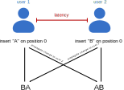

Module 2: Digitalisation in Research
Living documents
Jana Lasser
TU Graz & CSH Vienna
2022-12-15
Why living documents
Writing permeates all the activities of a researcher.
Writing grant proposals
Writing articles
Writing reports
Writing lecture notes
Writing minutes
...
The times when writing was a solitary activity are long gone.
Zombie documents

They are dead, they multiply and they haunt you.
Living documents are dynamically updated and can be edited by more than one person at the same time.
The challenge of concurrency
The challenge of concurrency

Example implementations
(Microsoft) Office documents in OneCloud or documents in Nextcloud
Overleaf or Authorea for scientific writing
Pads (HackMD, riseup) for quick and easy writing
Wikis (Wikipedia)
Prominent examples
Google Docs [grants, articles, minutes]
(Microsoft) Office documents [grants, articles, minutes]
Overleaf & Authorea [grants, articles]
Pads [idea generation, documentation]
Wikis [knowledge transfer, science communication]
Features of living documents
Parallel editing
Exporting
Access control (reading, editing)
Commenting
Version control
Reference management integration
Local hosting
Price
| Service | Access control | Comment | Version Control | Refs | Local? | Price |
|---|---|---|---|---|---|---|
| gDocs | + | + | + | + | - | free |
| office | + | + | + | + | ~ | paid |
| overleaf | + | + | ~ | + | - | freemium |
| authorea | ~ | + | + | + | - | freemium |
| hackMD | ~ | + | - | - | ~ | freemium |
| wiki | + | ~ | + | ~ | + | free |
Exercise [15 min]
Do one out of the following:
Pick a service you don't know that could be useful for you, make an account, create a document, write a sentence, insert a comment and invite another user.
Pick a function you don't know out of [version control, reference integration, local hosting] and try to figure out how to do it for a service you regularly use.
Show & tell
→ What do you like about a particular service you use regularly?
→ How much does accessbility of a service matter to you and which services are (not) very accessible in your epxerience?
→ What file formats do you usually export to and why?